Unofficial study solution; not an official GTU answer key. Answers have not been independently verified. English text reflows; source equations, diagrams and Gujarati retain their original appearance. Use Enlarge image to inspect them.
This supplied solution is English only; switching the site language does not translate its answers.
Coverage: All 14 MCQs and all three choices in each of the eight “attempt any two” sections are worked: 38 items in total. In the exam, follow the printed choice instructions.
Notation: Semicolons in a determinant separate its rows. Bold letters denote vectors. Angles in standard trigonometric limits are in radians. Inverse cotangent uses the principal range (0, π).
Question wording: The authentic printed English is retained; mathematical typesetting and line breaks are normalised. The Winter 2025 examination date printed on the paper is 08-01-2026.
Source: the owner-supplied Winter 2025 question paper. These worked solutions are study material, not an official GTU answer key.
Question 1
Q1 · Multiple-choice questions (14 marks)
Q.1 (1) · If |x, 1; 4, 2| = 6 then x = _____. · 1 mark
Printed options: (A) 5 (B) 1 (C) −5 (D) −1
2x − 4 = 6 ⇒ 2x = 10.
Option (A): x = 5.
Q.1 (2) · If log3x = 2 then x = ______. · 1 mark
Printed options: (A) 1 (B) 8 (C) 6 (D) 9
Convert from logarithmic to exponential form: x = 32.
Option (D): x = 9.
Q.1 (3) · 4log416 = ______. · 1 mark
Printed options: (A) 1 (B) 16 (C) 4 (D) 2
Use alogab = b, or note that log416 = 2.
Option (B): 16.
Q.1 (4) · If f(x) = 5x then f(−2) = ______. · 1 mark
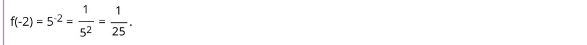
Q.1 (5)Radian = _______. · 1 mark · Open for the original formula and worked answer
Question
Worked solution
Printed options: (A) 120° (B) 138° (C) 80° (D) 105°
Option (C): 80°.
Q.1 (6) · Principal period of 4 sin(2x + 5) = ______. · 1 mark
The amplitude 4 and phase shift 5 do not change the period.
Option (D): π.
Q.1 (7) · tan−1x + cot−1x = ______; x ∈ R. · 1 mark
With arccot in the principal range (0, π), arctan x and arccot x are complementary for all real x.
Q.1 (8) · If vectors a = (2, 1, 3) and b = (1, 2, 0) then a × b = _______. · 1 mark
Printed options: (A) (−6, 3, −5) (B) (6, −3, 3) (C) (6, 3, 5) (D) (−6, 3, 3)
a × b = (1·0 − 3·2, 3·1 − 2·0, 2·2 − 1·1).
Option (D): (−6, 3, 3).
Q.1 (9) · i · j = _________. · 1 mark
Printed options: (A) 0 (B) k (C) 1 (D) −k
The coordinate unit vectors i and j are perpendicular, so their dot product is zero.
Option (A): 0.
Q.1 (10) · Radius of the circle x2 + y2 = 18 is ________. · 1 mark
Printed options: (A) 2√3 (B) 9 (C) 3√2 (D) 3√3
r2 = 18, so r = √18 = 3√2.
Option (C): 3√2.
Q.1 (11) · y-Intercept of a line 7x − 4y + 2 = 0 is _________. · 1 mark
At the y-intercept x = 0. Then −4y + 2 = 0.
Q.1 (12)lim as x → 2 of · 1 mark · Open for the original formula and worked answer
Question
Worked solution
Printed options: (A) 10 (B) 2 (C) 1 (D) 5
The denominator is nonzero at x = 2, so substitute directly.
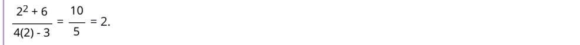
Option (B): 2.
Q.1 (13)lim as x → 0 of = ________ · 1 mark · Open for the original formula and worked answer
Question
Worked solution
Printed options: (A) 0 (B) 2 (C) −1 (D) 1
Let y = sin−1x. Then y → 0 and x = sin y; angles are in radians.
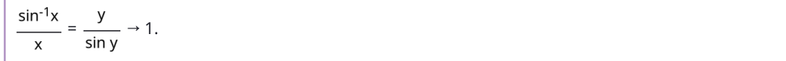
Option (D): 1.
Q.1 (14)lim as n → ∞ (1 + )3n = ________ · 1 mark · Open for the original formula and worked answer
Question
Worked solution
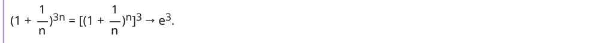
Option (A): e3.
Question 2
Q2 (A) · Attempt any two · 3 marks each
Q.2 (A) 1 · solve the equation |4, 2, x; 1, 5, −1; 3, 2, 3| = 4. · 3 marks
Expand along the first row, paying attention to the alternating signs +, −, +.
D = 4(15 + 2) − 2(3 + 3) + x(2 − 15).
D = 68 − 12 − 13x = 56 − 13x.
Set D = 4: 56 − 13x = 4, so 13x = 52.
x = 4.
Check: 56 − 13(4) = 4.
Q.2 (A) 2If f(x) = ex then prove that (1) f(x + y) = f(x) · f(y) (2) f(x − y) = · 3 marks · Open for the original formula and worked answer
Question
Worked solution
Apply the laws of exponents to the given definition.
f(x + y) = ex+y = exey = f(x)f(y).
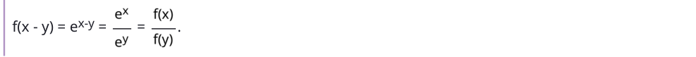
The denominator f(y) = ey is never zero.
Both identities are proved.
Q.2 (A) 3Evaluate: 4sin2 − tan2 + cot2 − 3 cosec2 · 3 marks · Open for the original formula and worked answer
Question
Worked solution
Use the standard trigonometric values, with angles in radians.
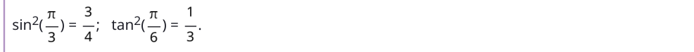
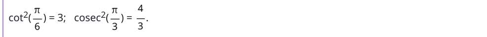
Q2 (B) · Attempt any two · 4 marks each
Q.2 (B) 1Prove that: logb4a3 · logc4b3 · loga4c3 = · 4 marks · Open for the original formula and worked answer
Question
Worked solution
For real logarithms here, a, b and c must be positive and each different from 1. Use change of base.
In the product, ln a, ln b and ln c cancel.
Q.2 (B) 2Prove that: 3 log ( ) + log ( ) − log ( ) − 2 log(3) = log 3 · 4 marks · Open for the original formula and worked answer
Question
Worked solution
Apply the power rule and then combine the logarithms.
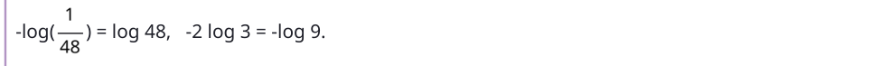
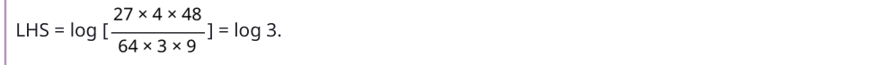
LHS = log 3 = RHS.
Q.2 (B) 3solve: = log 32 · 4 marks · Open for the original formula and worked answer
Question
Worked solution
Since 256 = 162, log 256 = 2 log 16. Also x must be positive.
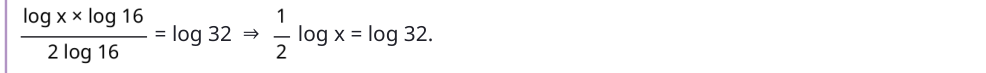
log x = 2 log 32 = log(322).
x = 1024.
Check: half of log 1024 is log 32.
Question 3
Q3 (A) · Attempt any two · 3 marks each
Q.3 (A) 1Prove that: = cot θ · 3 marks · Open for the original formula and worked answer
Question
Worked solution
Reduce each allied angle; take θ only where the printed expression is defined.
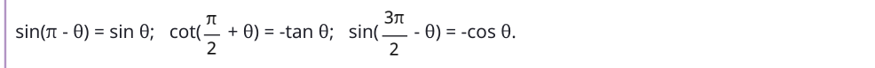
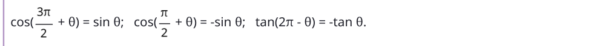
Numerator = sin2θ; denominator = sin2θ tan θ.
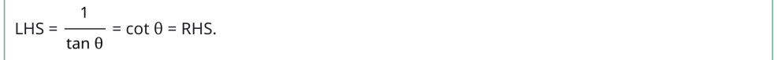
Validity: sin θ and cos θ must be nonzero.
Q.3 (A) 2Prove that: tan−1( ) + tan−1( ) = · 3 marks · Open for the original formula and worked answer
Question
Worked solution
Q.3 (A) 3 · Find the equation of a circle whose centre is (2, 3) and circumference is 4π. · 3 marks
Use circumference C = 2πr. With C = 4π, the radius is r = 2.
(x − h)2 + (y − k)2 = r2.
(x − 2)2 + (y − 3)2 = 4.
Check: the radius is 2, giving circumference 2π(2) = 4π.
Q3 (B) · Attempt any two · 4 marks each
Q.3 (B) 1Prove that: tan(57°) = · 4 marks · Open for the original formula and worked answer
Question
Worked solution
Write 57° = 45° + 12° and use the tangent addition formula.
Multiply numerator and denominator by cos 12°, which is nonzero.
Check: cos 12° − sin 12° is not zero, so the expression is defined.
Q.3 (B) 2 · Draw the Graph of y = sin x, 0 ≤ x ≤ π · 4 marks
Mark x in radians and calculate the key sine values.
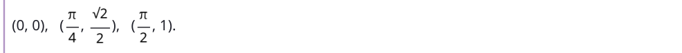
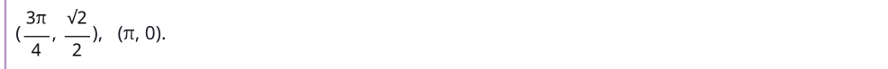
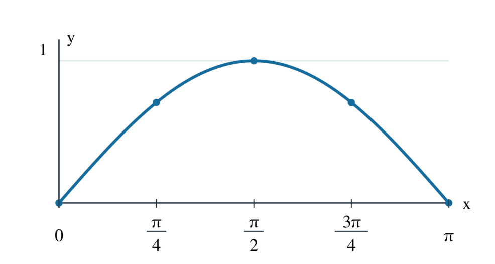
Sine curve: endpoints (0, 0) and (π, 0); the highest point is at the midpoint, where y = 1.
The required curve rises from 0 to 1 and returns to 0.
Q.3 (B) 3Show that the angle between the vectors i − j and 2i + j − k is cos−1 · 4 marks · Open for the original formula and worked answer
Question
Worked solution
Take a = (1, −1, 0) and b = (2, 1, −1).
a · b = 2 − 1 + 0 = 1; |a| = √2, |b| = √6.
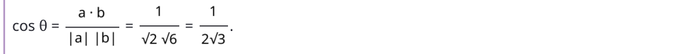
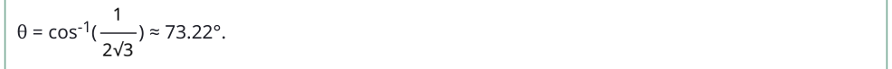
Check: the positive dot product makes the angle acute.
Question 4
Q4 (A) · Attempt any two · 3 marks each
Q.4 (A) 1 · For what value of x the vectors 5k + 2i − 3j and xi − 6j − 8k are Perpendicular to each other? · 3 marks
Reorder the first vector into (i, j, k) components: (2, −3, 5).
(2, −3, 5) · (x, −6, −8) = 2x + 18 − 40 = 0.
2x = 22.
x = 11.
Check: 22 + 18 − 40 = 0.
Q.4 (A) 2 · If a = i + 4k − 2j, b = j − 4k − 3i and c = i + 2j − 4k then Find |5a + 3b − 2c| · 3 marks
Use the component order (i, j, k): a = (1, −2, 4), b = (−3, 1, −4), c = (1, 2, −4).
5a + 3b − 2c = (5, −10, 20) + (−9, 3, −12) + (−2, −4, 8).
Resultant = (−6, −11, 16), so its magnitude is √(36 + 121 + 256).
Required magnitude = √413.
Q.4 (A) 3 · Find the unit perpendicular vector to the both vectors x = (3, 1, 2) and y = (2, −2, 4). · 3 marks
A cross product is perpendicular to both vectors. Divide it by its magnitude to make it a unit vector.
x × y = (8, −8, −8); |x × y| = 8√3.
Check: (3, 1, 2) · (1, −1, −1) = 0 and (2, −2, 4) · (1, −1, −1) = 0; either sign has magnitude 1.
Q4 (B) · Attempt any two · 4 marks each
Q.4 (B) 1 · If x = −8j + 3i and y = 5j − 4k then find |(x + y) × (x − y)| · 4 marks
x = (3, −8, 0), y = (0, 5, −4).
x + y = (3, −3, −4); x − y = (3, −13, 4).
Cross product = (−64, −24, −30).
Magnitude = √(642 + 242 + 302) = √5572.
Required magnitude = 2√1393.
Check: the cross product also equals −2(x × y), where x × y = (32, 12, 15).
Q.4 (B) 2 · Under the effect of Forces 5i + 3k, k + 2i and 2i + j a particle moves from point (1, 3, 5) to point (4, 3, 1). Find the work done under the effect of these forces. · 4 marks
For constant forces, total work is the resultant force dotted with the displacement.
F = (5, 0, 3) + (2, 0, 1) + (2, 1, 0) = (9, 1, 4).
s = (4, 3, 1) − (1, 3, 5) = (3, 0, −4).
W = F · s = 9(3) + 1(0) + 4(−4) = 11.
Work done = 11 work units (11 J if forces are in N and positions in m).
Q.4 (B) 3Evaluate: lim as x → 0 of · 4 marks · Open for the original formula and worked answer
Question
Worked solution
Add and subtract 1 in the numerator, then use the standard exponential limit.
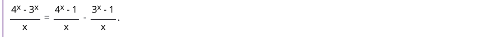
As x → 0, the terms approach ln 4 and ln 3 respectively.
Question 5
Q5 (A) · Attempt any two · 3 marks each
Q.5 (A) 1Evaluate: lim as x → −3 of · 3 marks · Open for the original formula and worked answer
Question
Worked solution
x3 + 27 = (x + 3)(x2 − 3x + 9).
x2 + 5x + 6 = (x + 3)(x + 2).
Limit = −27.
Q.5 (A) 2Evaluate: lim as x → 3 of · 3 marks · Open for the original formula and worked answer
Question
Worked solution
Both numerator and denominator approach zero. Put u = ∛x and v = ∛3.
x3 − 27 = (x − 3)(x2 + 3x + 9).
x − 3 = u3 − v3 = (u − v)(u2 + uv + v2).
Cancel u − v. As x → 3, both u and v tend to ∛3.
Limit = [3(∛3)2] × [9 + 9 + 9] = 81∛9.
Limit = 81∛9.
Q.5 (A) 3Evaluate: lim as x → ∞ (1 + )2x · 3 marks · Open for the original formula and worked answer
Question
Worked solution
Let F(x) be the given expression. For sufficiently large positive x the base is positive, so take natural logarithms.
The exponential function is continuous; therefore F(x) → e10.
Limit = e10.
Q5 (B) · Attempt any two · 4 marks each
Q.5 (B) 1 · If two lines 5x − my = 3 and 2x + 3y = 4 are (a) Parallel then find the value of m (b) Perpendicular then find the value of m. · 4 marks
The lines have normal vectors n1 = (5, −m) and n2 = (2, 3).
(a) Parallel lines have parallel normals. Their determinant must be zero.
(b) Perpendicular lines have perpendicular normals. Their dot product must be zero.
Check: both conditions avoid dividing by m, so the vertical-line case is not overlooked.
Q.5 (B) 2 · Find the equation of Tangent and Normal to the circle x2 + y2 − 2x − 9 = 0 at the point (2, 3). · 4 marks
Check the point: 22 + 32 − 2(2) − 9 = 0, so it lies on the circle.
(x − 1)2 + y2 = 10, so the centre is C = (1, 0).
Normal: y − 3 = 3(x − 2) ⇒ 3x − y − 3 = 0.
Tangent: x + 3y − 11 = 0; normal: 3x − y − 3 = 0.
Check: both lines pass through (2, 3), and their slopes multiply to −1.
Q.5 (B) 3 · Find the angle between two lines x + y + 1 = 0 and 2x + 3y + 7 = 0. · 4 marks
Check: the two slopes are close, so the smaller angle should be small.
DiplomaOne · Mathematics-I DI01000021 · Winter 2025 · Compare with the original paper and your institute’s official guidance.